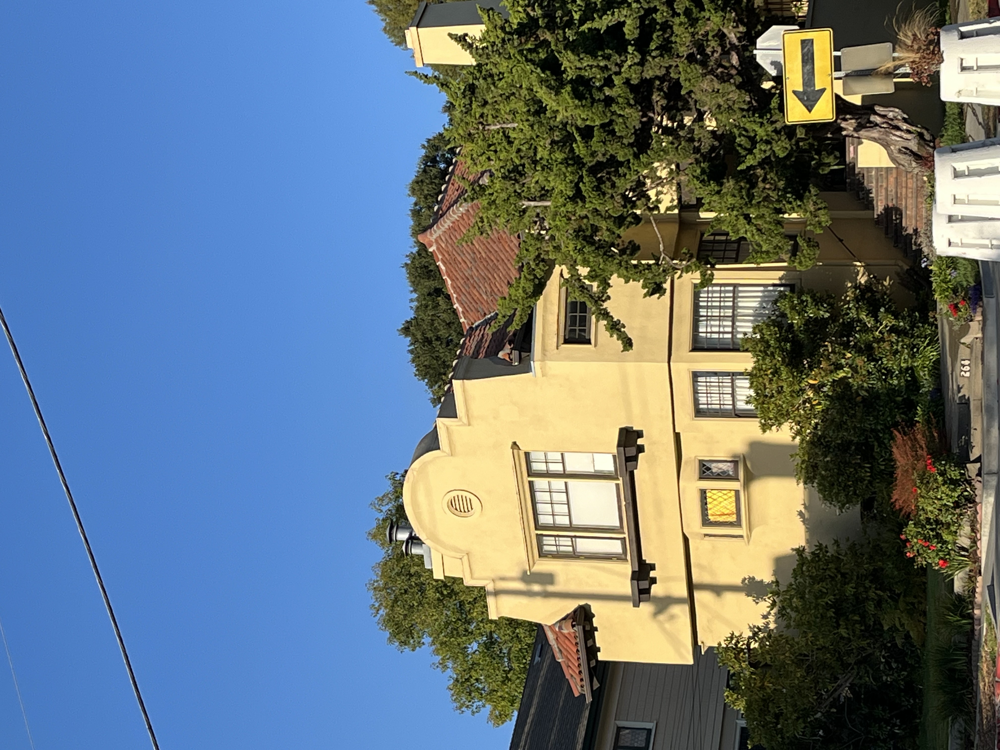

CS180 – Project 0: Visual Storytelling
Project 0 of CS180. Watch how focal length changes how the image looks:
Part 1: Selfie — The Wrong Way vs. The Right Way
Part 2: Architectural Perspective Compression

Part 3: The Dolly Zoom
← Back to Main Portfolio